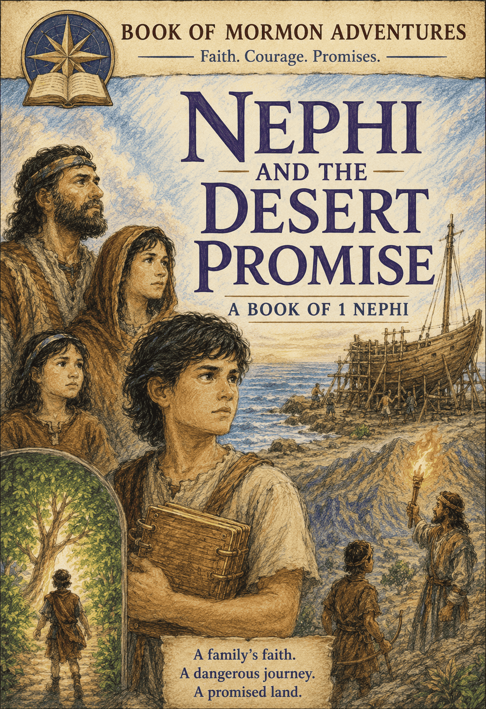
THE LONG WAY HOME
The Story of Nephi and His Family
A retelling of the First Book of Nephi, from the Book of Mormon, for brave young readers
A Note Before We Begin
A long, long time ago — about six hundred years before Jesus was born — there really was a boy named Nephi. He lived in the great city of Jerusalem. Then he lived in tents in the desert. Then he sailed across a whole ocean to a brand-new land.
Nephi wrote his own story down so we would remember it forever. This book tells that story in his own voice — almost as if Nephi is sitting right beside you, telling you what happened. The big things — the fire, the angel, the shining ball, the ship — all really happened, just as Nephi said.
So find a cozy spot. Nephi has a story to tell you.
Chapter 1: The Pillar of Fire
My name is Nephi. And something was wrong with my city.
I stood on the roof of our house and looked out at Jerusalem. People were shouting in the streets. Again.
"Nephi!" My big brother Laman climbed up, eating a fig. "Dad wants you."
"Listen," I said. "Everybody's fighting."
Laman shrugged. "People fight."
But it wasn't just fighting. Prophets stood in the streets, telling everyone to be good. And people threw rocks at them.
Something bad is coming, I thought. I can feel it.
At dinner, my dad was too quiet. Dad was never quiet. When we finished eating, he slipped out the door into the dark.
I followed him.
I know. I shouldn't have. But I had to see.
Dad walked up a hill outside the city. He knelt down. And he prayed a long, long prayer.
Then the sky opened up.
A pillar of fire came roaring down from heaven! It stood on a rock, right in front of my dad, taller than a tree. It was so bright I had to cover my eyes.
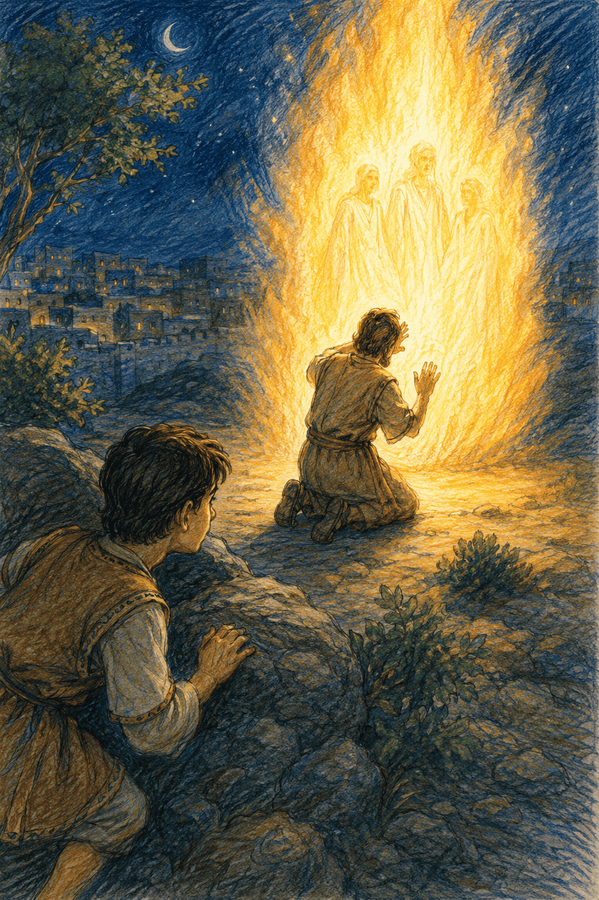
Fire! Real fire, from the sky!
Inside the flames, I could see shapes. I could almost hear voices.
Then — poof. The fire was gone. The hill was dark and quiet again.
But my dad was still kneeling. And when he lifted his head, his face was shining.
"Dad?" I whispered.
He looked at me. He wasn't even surprised I was there.
"God showed me things tonight, my son," he said softly. "Wonderful things. And scary things too."
"What scary things?"
"Jerusalem is in danger. The people have become bad. If they don't turn back to God…" He looked at the sleeping city. "…this whole city will be destroyed."
I gulped. "Destroyed? But it's the strongest city in the world!"
"No city is stronger than God," said Dad. "That's why He showed me. He wants me to warn them."
I looked at the dark streets. I remembered the rocks flying at the prophets.
Oh no, I thought. They are NOT going to like that.
Chapter 2: The Warning
The next morning, my dad did the bravest thing I ever saw.
He stood up in the middle of the busy city and shouted, "People of Jerusalem! Turn back to God, or this city will fall!"
The people did not clap.
They laughed. They pointed. Then somebody yelled, "Quiet him — for good!"
Hands reached for stones.
"Dad!" I grabbed his robe. "We have to go. NOW!"
We ran all the way home.
That night, we sat in the dark. My mom, Sariah, held Dad's hand.
"They want to hurt you," she said.
"I know," said Dad. "So God told me what to do." He looked at all of us. "We are leaving Jerusalem. Tonight."
"Leaving?" said Laman. "And going where?"
"Into the desert. God will lead us."
"But our house!" cried my brother Lemuel. "Our gold! Our things!"
"We leave them," Dad said.
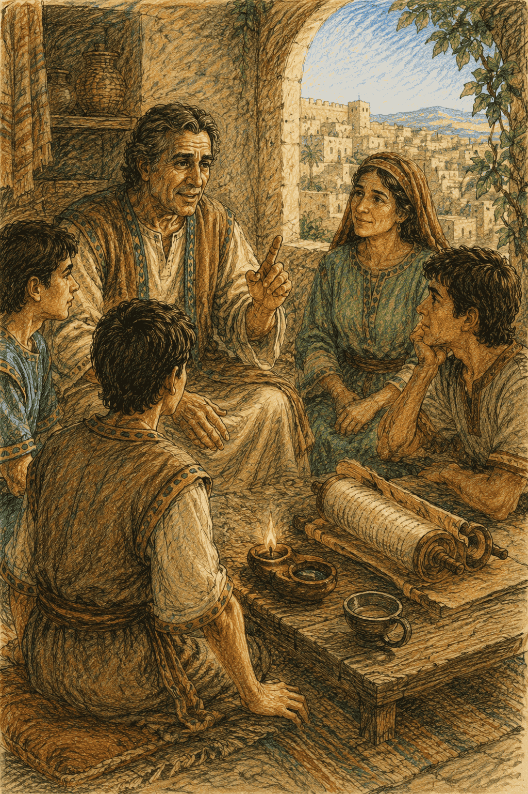
I stared at him. Leave our gold? Leave everything?
But I remembered the fire on the hill.
If God said so, I thought, then it must be right.
So we packed what we could carry. And before the sun came up, we slipped out the city gate into the dark.
I looked back one time. Jerusalem sat quiet behind its big stone walls. I had lived there my whole life.
Will I ever see it again?
Then I turned and followed my family into the wild.
The desert was hard. Hot in the day. Cold at night. My feet hurt.
And Laman and Lemuel complained the whole way.
"This is crazy," Laman grumbled. "We left a nice house for a pile of sand."
"Dad heard God," I told him.
"Dad heard a dream," said Laman.
But Dad never turned back. He led us on and on, until we found a green valley with a cool river running through it.
"We'll camp here," Dad said. And he smiled for the first time in days.
I dropped my heavy bag and breathed. Water. Shade. Rest, at last.
But something told me our journey had only just begun.
Chapter 3: I Will Go and Do
That night, I couldn't sleep.
Laman and Lemuel didn't believe Dad. But I wanted to. I really did.
Do I believe just because Dad believes? I wondered. Or do I know for myself?
I had to find out.
So I walked out under the stars, and I knelt down, and I prayed. God, is it true? Please — let me know for myself.
And then it happened.
A warm feeling filled me up, from my toes to the top of my head. Soft, and quiet, and sure. Like a voice with no words.
Yes, it seemed to say. It's true. Be brave, and I will help you.
I opened my eyes. They were wet. But I was smiling.
Now I knew. I really, really knew.
A few days later, Dad called us together. "God has given us a new job," he said. "And it's a hard one."
We leaned in.
"Back in Jerusalem, a man named Laban keeps something precious. Not gold — God's holy words, written on plates of brass. We need them. You must go back and get them."
Laman's mouth fell open. "Go BACK? To the city that wants us dead? To ask mean old Laban for his treasure?" He crossed his arms. "It can't be done."
Everyone looked at the ground.
Somebody had to say something.
So I stood up.
"I will go and do what God asks," I said. "Because God never gives us a hard job without making a way to do it."
Dad's eyes filled with tears.
And the next morning, off we went — back toward the city we had just run away from.
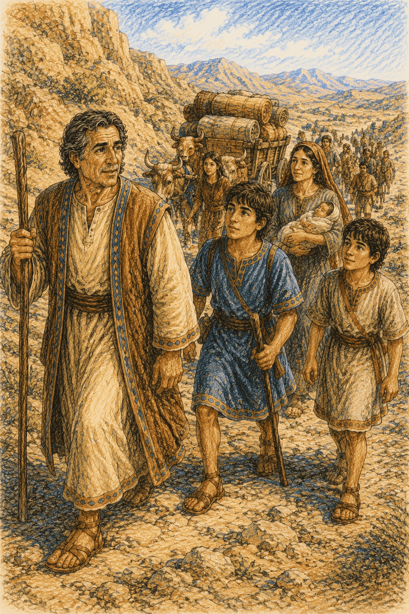
Back toward Laban, I thought, and swallowed hard. But God will make a way. He always does.
Chapter 4: The Angel in the Cave
Outside the city, we made a plan.
"We'll draw straws," said Laman. "Whoever loses has to ask Laban."
Laman lost.
He marched up to Laban's big house. We waited. Then — here he came, running for his life!
"He called me a robber!" Laman gasped. "He tried to have me killed! Let's go home!"
"No," I said. I had an idea. "Remember all the gold Dad left behind? Let's trade it for the plates. Laban loves treasure."
So we snuck to our old house, gathered up the gold and silver, and carried it all to Laban.
Laban's eyes went big and greedy.
Then he shouted, "Guards! Throw them out — and keep the gold!"
"RUN!" I cried.
We ran and ran, until we found a dark cave to hide in. Now we had nothing. No plates. No gold.
Laman was so angry. He grabbed a stick and started hitting me and my kind brother Sam.
"This is YOUR fault!" he yelled.
I curled up. It hurt. But worse than the hurt was how mean it was.
And then — the cave lit up.
I looked up. A man stood there. A man made of light.
An angel!
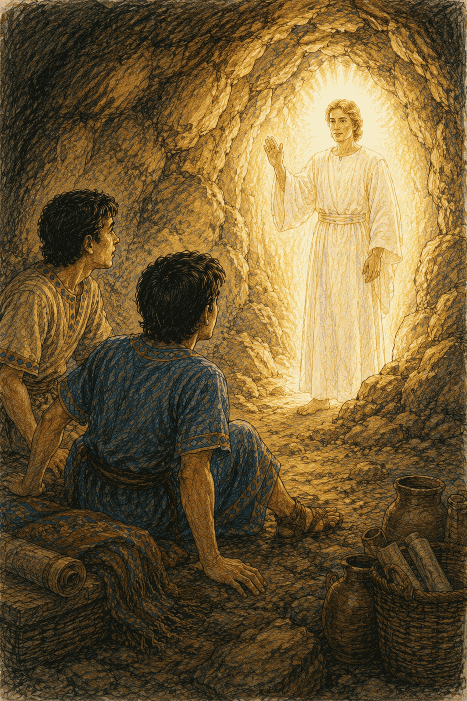
Laman dropped the stick. Nobody breathed.
"Why do you beat your younger brother?" the angel asked. His voice was gentle, but it filled the whole cave. "Go back to Jerusalem. This time, God will help you get the plates."
Then he was gone.
For a moment, we all just stared.
Then Laman started grumbling again. "Help us? How? Laban has fifty soldiers!"
I stood up. My arms still hurt. But I wasn't scared anymore.
"We just saw an ANGEL," I said. "God is stronger than Laban. Stronger than fifty soldiers. Stronger than the whole world!"
I looked out at the dark city.
I don't know how I'll get those plates, I thought. But I'm going to find out.
And this time, I would go alone.
Chapter 5: The Bravest Night
The city was fast asleep.
I crept through the dark, empty streets. I didn't have a plan. I just followed the quiet feeling in my heart, one step at a time.
Where are you leading me, God?
Then my foot bumped into something.
Someone!
A man lay on the ground, fast asleep. I leaned close in the moonlight — and gasped.
It was Laban.
Beside him lay his sword, with a handle of pure gold. And into my heart came that quiet voice again.
Nephi. You must take his life.
I froze. "No," I whispered. "Please. I've never hurt anyone."
But the voice was patient, and sure. Laban tried to kill you. He stole from you. And if you don't do this, your whole family — and all the children who will ever come after you — will grow up without God's words. It is better that one man is gone than that a whole people forget God.
I understood. This was the only way. God had promised. And God could see what I could not.
So I did the hardest thing I have ever done.
I obeyed.
When it was done, I put on Laban's clothes. In the dark, I looked just like him.
I walked right up to Laban's treasure room. A servant named Zoram stood guarding it.
"Fetch the brass plates," I said, in a low, gruff voice. "We're taking them out of the city."
"Yes, master," said Zoram. And he did.
He walked with me all the way to the gate — thinking I was Laban the whole time!
But when my brothers saw me coming, dressed like Laban, they screamed and ran.
"Wait!" I called in my own voice. "It's me — Nephi!"
Zoram jumped in fright. But I caught his arm.
"Don't be afraid," I said. "Come with us. Be free. Be part of our family."
Zoram looked at me for a long moment. Then he smiled. "I'll come," he said.
We hurried back to camp. When Mom saw us, she cried and hugged us tight.
"You're alive!" she wept. "And you have the plates!"
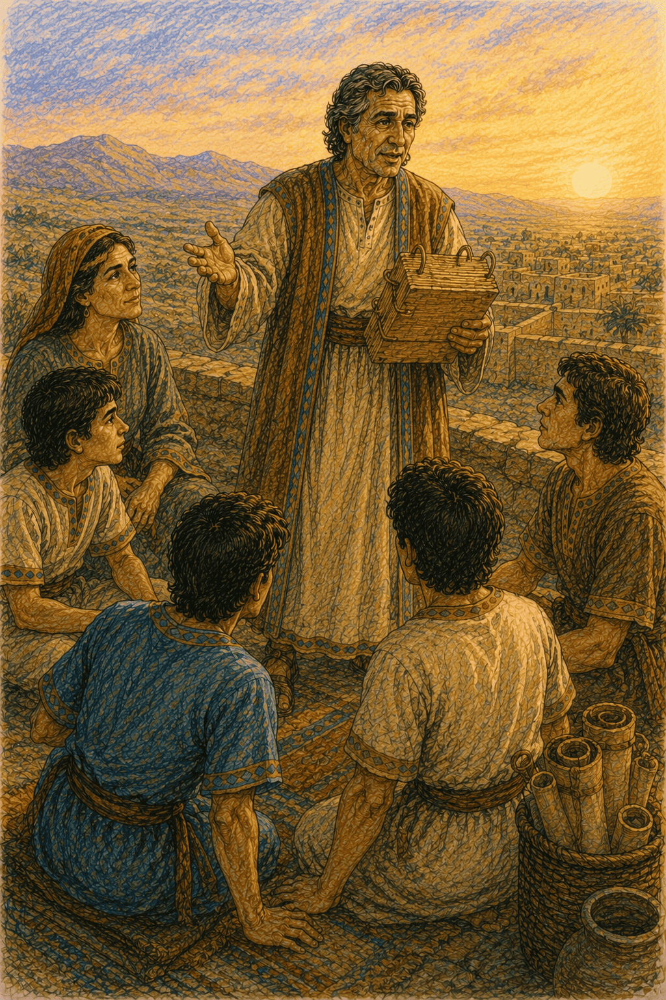
That night, we thanked God until the fire burned low.
I had done what God asked.
Just like I said I would.
Chapter 6: The Ropes
We weren't home long before Dad called us again.
"One day, you'll each want a family of your own," he said. "So go back to Jerusalem, to a good man named Ishmael. Invite his family to join us. He has sons — and daughters."
Nobody complained this time. (Meeting daughters sounded a lot better than facing Laban!)
So we went, and Ishmael's whole family came back with us. Now we were a big group, marching into the desert together.
But the desert was long, and hot. And soon Laman started grumbling again.
"Why did we ever leave Jerusalem?" he said. "Let's just go back!"
"How can you forget so fast?" I said. "We saw an angel! We heard the voice of God!"
That made Laman even angrier.
"You think you're better than us!" he snapped. "You think you should be the boss!"
And then he and Lemuel grabbed me. They tied my hands and feet with rough ropes — so tight it hurt. They were going to leave me in the desert. For the wild animals.
I didn't yell. I closed my eyes, and I prayed.
God, please. Give me strength to break these ropes.
And a warm strength poured into my arms. Strength that wasn't mine.
I pulled.
I pushed.
SNAP! The ropes fell right off.
I stood up. Free.
Laman stared, half amazed and half mad. He came at me again —
— but a brave girl, one of Ishmael's daughters, jumped in front of me with her arms spread wide.
"Stop!" she cried. "Leave him alone!"
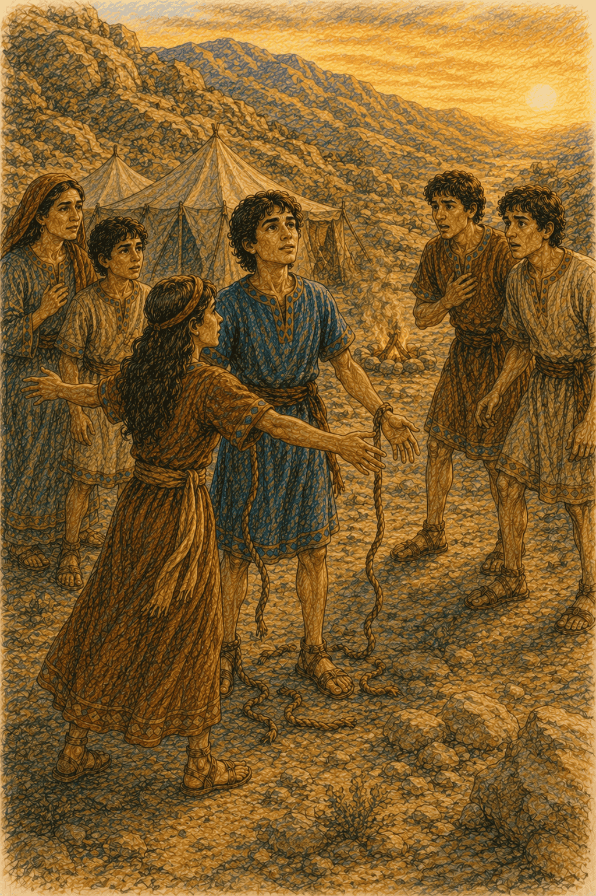
Laman stopped. And then something surprising happened.
He was sorry. He hung his head. And he asked me to forgive him.
So I did. I hugged my big brother, and I forgave him with my whole heart.
Because that is what God does. And I wanted to be like God.
That night, by a peaceful fire, Dad leaned in close.
"Last night," he said, his eyes twinkling, "I had a dream. The most wonderful dream of my life."
I scooted closer.
"Tell us, Dad," I said. "Tell us everything."
Chapter 7: The Tree of Life
"In my dream," Dad began, "I was lost in the dark. So I prayed. And then I saw a tree."
"A tree?" I said.
"The most beautiful tree in the world. Its fruit was white and shining. I tasted it — and it was the sweetest thing ever. So sweet it filled me up with joy. All I wanted was to share it with all of you."
"Did you find us?" I asked.
"I found a path," said Dad. "And along the path was a rod of iron — a railing to hold onto. But then a cold, dark mist rolled in. Some people let go of the rod, and got lost in the dark. But the ones who held on tight — they made it to the tree."
His face turned sad.
"And across the way was a big, fancy building, floating in the air. It was full of people laughing and pointing, making fun of everyone at the tree. Some people got embarrassed… and let go of the rod… and wandered away."
"Hold on to the rod, my children," Dad said softly. "No matter what."
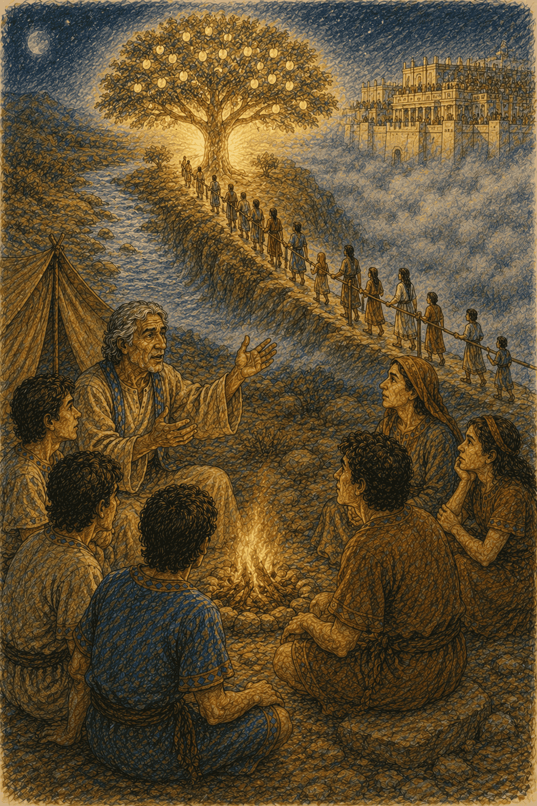
I couldn't stop thinking about it.
I want to see it too. I want to understand it — for myself.
So I went off alone and prayed. And God showed me the very same dream — and He explained it.
An angel showed me a young woman, far away in a town called Nazareth. Her name was Mary. And she held a baby in her arms.
"Look, Nephi," said the angel. "This is the Son of God. His name is Jesus. He will save the whole world."
Then I understood everything.
"The tree is the love of God," the angel said. "The sweetest gift of all — Jesus, and His love. And the iron rod is God's word. Hold on to it, and it will lead you right through the dark, all the way to God."
"What about the mist?" I asked.
"That's all the sneaky things that try to make you forget God," he said. "And the fancy building is the proud people who laugh at those who love God. But it floats on nothing. One day, it will fall."
I came back to camp with my heart on fire.
It wasn't just a dream about a tree.
It was a map — showing the way home. All the way home to God.
And I'm going to hold on tight, I promised myself. And never let go.
Chapter 8: The Shining Ball
One morning, Dad called out, "Nephi! Come look!"
On the ground, right by the tent, sat a beautiful round ball of shiny brass. Inside it were two little pointers, like arrows.
"Where did it come from?" I asked.
"God gave it to us," said Dad. "It will show us which way to go."
We called it the Liahona.
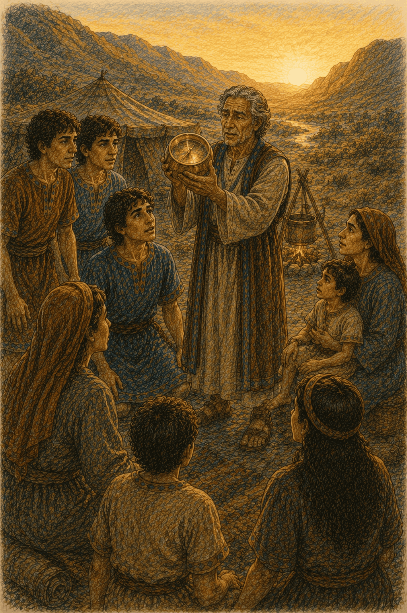
But it had a secret. It only worked when we had faith. When we were good and trusted God, the pointers pointed the way. But when we grumbled and fought — it stopped.
A little ball, I thought, that does great things — but only when we believe. Isn't that something?
On and on we traveled. It was so hard. We were hungry and tired.
And then — snap! My bow broke.
That was bad. Very bad. My bow was how I hunted food for everyone. Now we had nothing to eat.
Everyone was scared. Everyone grumbled — even Dad.
But I didn't grumble. I got to work.
I found a piece of wood, and I carved a brand-new bow.
Then I went to Dad and asked, "Where should I go to find food?"
That made Dad remember to trust God again. He prayed. And writing appeared on the Liahona, showing me right where to go!
I climbed up the mountain with my little wooden bow. And I came back with so much food that everyone cheered.
Even Laman was amazed.
But then something sad happened. Kind old Ishmael grew sick. And out in the desert, far from home… he died.
His daughters cried and cried. And Laman got angry again. But God spoke to us, and we kept going.
We were so tired. We had been traveling for years.
Then one day, we came over a hill — and heard a sound I hadn't heard in a long, long time.
Waves. Big ocean waves.
I ran to the top and looked.
The sea! We made it to the sea!
Chapter 9: Building the Ship
The land by the sea had everything. Fruit. Honey. Fresh water. We called it Bountiful.
After years in the desert, it felt like heaven. I climbed a mountain to thank God.
And there, God gave me the biggest job of my whole life.
Nephi, He said. Build a ship. You will sail across the sea, to a promised land.
A ship? I had never built a ship. I didn't even know how!
But I had learned a secret. You don't start with "I can't." You start with a question.
"God," I asked, "where do I find metal to make tools?"
And He showed me. Step by step, day by day, God taught me how to build the ship.
But when Laman and Lemuel saw me working, they didn't help. They laughed.
"Look at him!" they said. "He's going to drown us all! Nobody can cross that ocean!"
I turned around. And this time, I did not stay quiet.
"You've seen an angel!" I said. "You've heard God's voice! He split the whole Red Sea for Moses! Do you really think He can't help us build a boat?"
They jumped up, angry, and came to throw me in the water.
"In the name of God," I said, and held up my hand, "do NOT touch me!"
And something happened.
I was filled with the power of God. I could feel it shining out of me.
"If you touch me," I said, "you will shake and shrivel like a dry leaf. For God is with me."
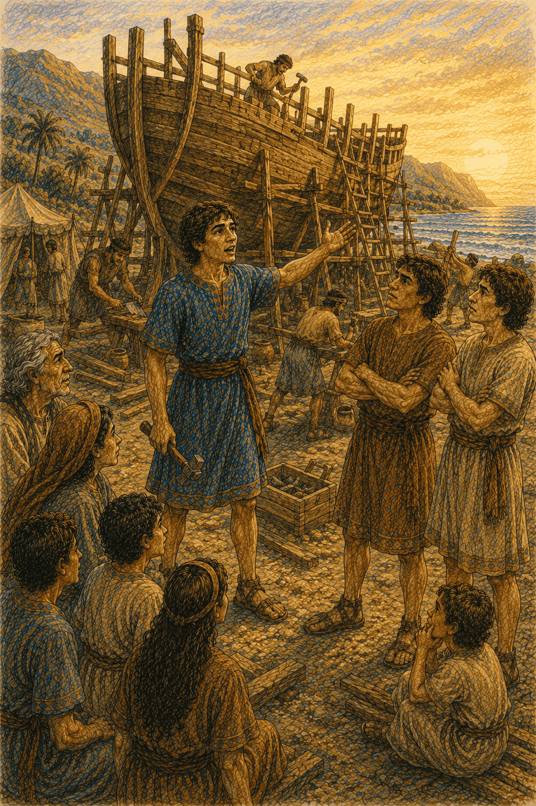
They couldn't move. They were too afraid to even touch me.
After that, they were sorry. They stopped laughing. They picked up tools.
And together — all of us — we built the ship.
When it was done, we stood back and looked.
It was beautiful. More beautiful than anything the finest builders in Jerusalem could ever make.
"Come on," I said, grinning. "Let's go home."
Chapter 10: The Storm at Sea
We loaded the ship with food and seeds. Everyone climbed aboard — Dad, Mom, my brothers, Zoram, Ishmael's family, and all the children.
We let down the sail. The wind pushed us out to sea. And off we went, toward the promised land!
For many days, it was wonderful. Dolphins jumped beside us. The children laughed.
But far out in the middle of the ocean, Laman and Lemuel forgot God again.
They started a wild, rude party — dancing and shouting.
"Please stop," I begged. "We could be in danger out here."
"You're not the boss!" Laman shouted.
And then — they grabbed me, and tied me up with ropes. Tight.
And the moment they tied me, the Liahona stopped working.
Nobody knew which way to sail.
Then the sky turned black.
A storm! The wind screamed. Waves rose up like mountains and crashed down on us. The ship was pushed backward, out to sea.
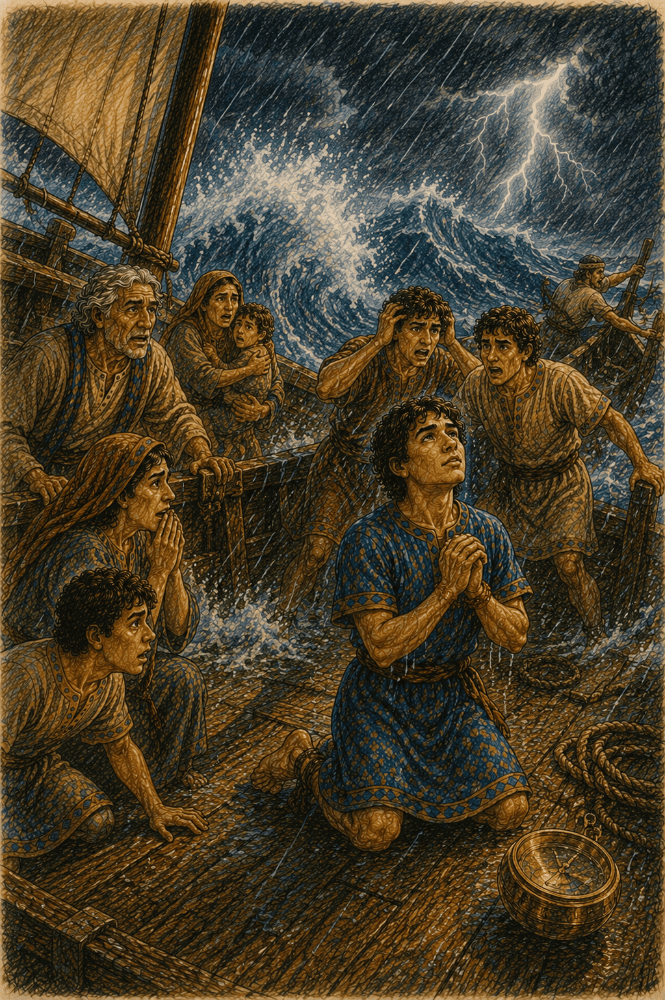
For three whole days, the storm roared. And still my brothers wouldn't untie me.
My arms hurt. My legs hurt. But I did not yell at God.
I thanked Him. Even tied up. Even in the storm.
On the fourth day, we were almost swallowed by the sea.
"Untie him!" everyone cried. "We're going to drown!"
Finally — finally — Laman and Lemuel were scared enough. They untied the ropes.
I could barely move my arms. But I did not say "I told you so."
I just picked up the Liahona.
And it started working again.
I looked up at the black, roaring sky. And I prayed.
And the storm heard me.
The wind stopped. The waves lay flat. The sun broke through the clouds and shone down on a calm, quiet sea.
Everyone stared, amazed.
We sailed on. Day after day. Until one bright morning, a little child pointed and shouted the word we had waited years to hear:
"LAND! I see land!"
And there it was. Green hills. Golden shores. Rising up out of the sea.
The promised land. Our new home.
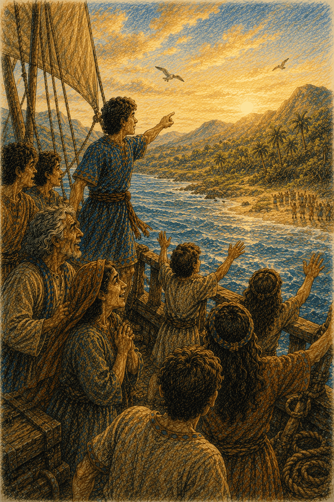
We ran the ship onto the beach and tumbled out onto solid ground, laughing and crying and hugging. We fell on our knees in the warm sand and thanked God.
We had left Jerusalem. We had crossed the desert. We had faced Laban, and angels, and storms.
And through all of it, I had held on to the iron rod, and never let go.
I stood on the shore of the promised land, the sea wind in my hair, my family all around me.
I looked out at the beautiful new land God had given us.
I was home.
The End
...of the first book of Nephi.
But it is only the beginning of Nephi's story — and of a great and wonderful people who would live in that promised land for a thousand years, and who wrote everything down, so that one day you could read it, and remember, and hold to the rod, too.
Things to Remember from Nephi's Story
- "I will go and do." When God asks us to do something hard, we can trust that He will make a way — just like Nephi did.
- Ask for yourself. Nephi didn't just believe because his dad believed. He prayed and found out for himself. You can, too.
- Hold to the rod. God's word is like an iron railing that leads us safely through the dark, all the way to God's love.
- Faith makes small things powerful. The Liahona was just a ball — but with faith, it led a whole family across the world.
- Choose to forgive. Again and again, Nephi's brothers were unkind to him. And again and again, Nephi forgave them, because he wanted to be like God.